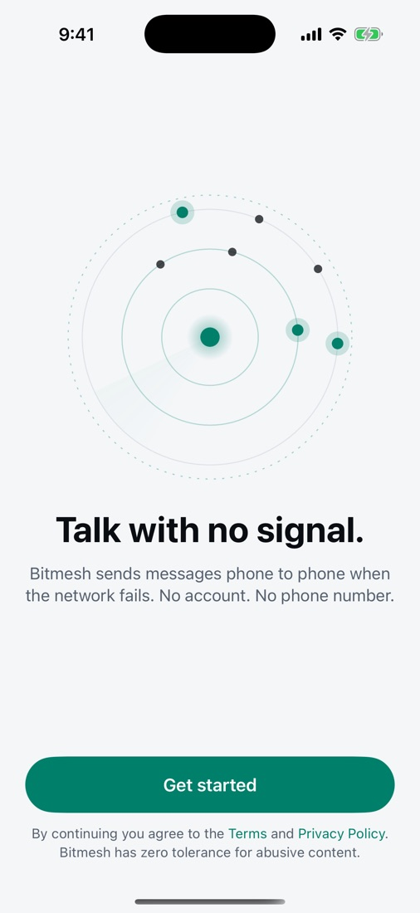
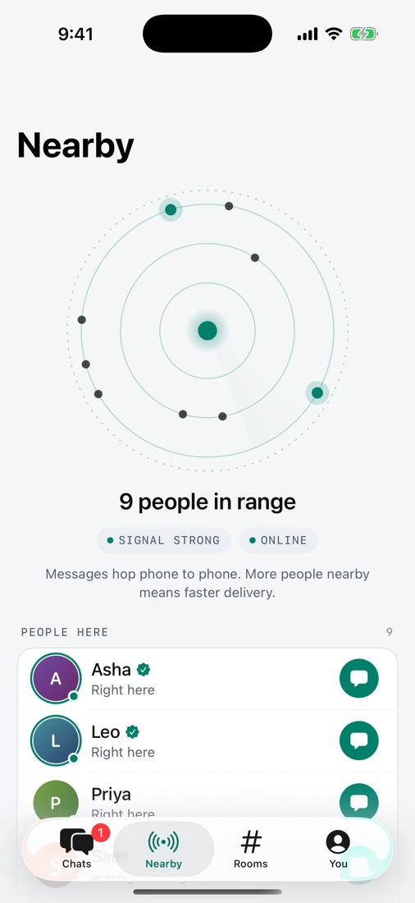
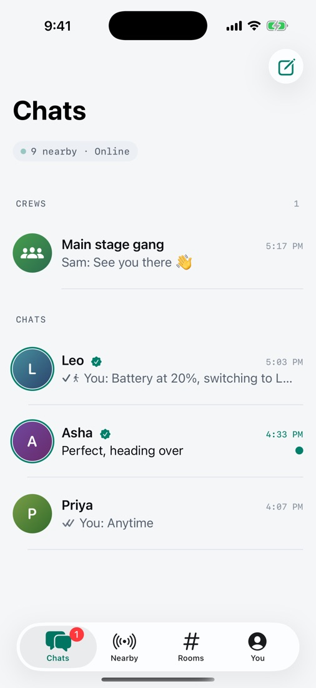
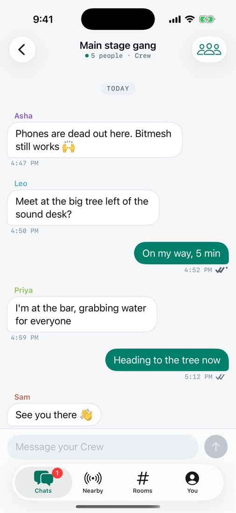
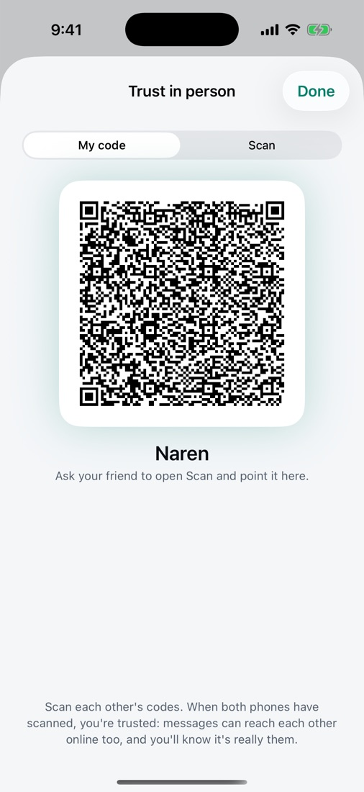
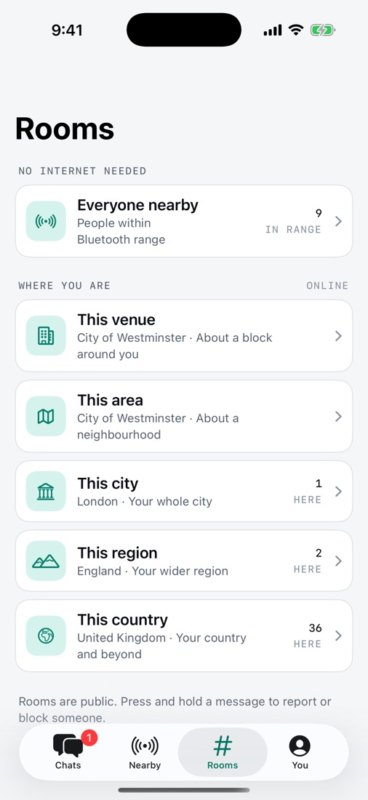
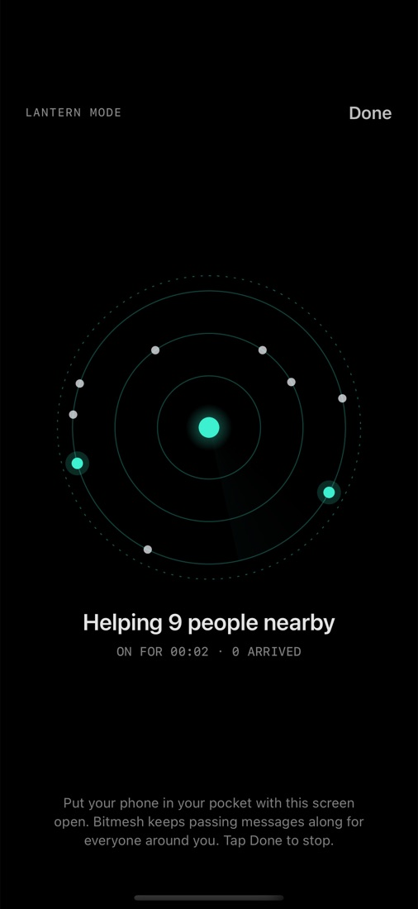
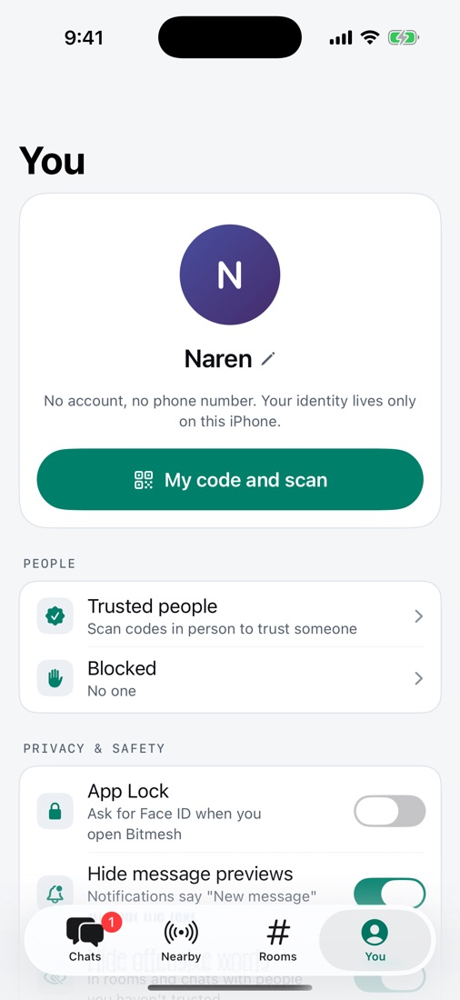

Guide
How to use Bitmesh
Bitmesh lets you message people around you when there is no signal. Phones pass messages to each other over Bluetooth, and use the internet too when it is there. Here is everything you need, in nine short steps.
- 01 Set up
- 02 See who is nearby
- 03 Chat one to one
- 04 Read the ticks
- 05 Start a Crew
- 06 Trust a friend
- 07 Join a room
- 08 Lantern mode
- 09 Stay safe
Step 01
Set up in 30 seconds
There is no account, no phone number and no email.
- Open Bitmesh and tap Get started.
- Type the name you want people to see. You can change it later.
- Tap Turn on Bluetooth and allow it. This is how phones find each other.
- Allow notifications if you want a nudge when someone writes. Message text stays hidden on your lock screen by default.
- Tap Start chatting.
Your identity lives only on your iPhone. If you delete the app, it is gone for good.

Step 02
See who is nearby
Open the Nearby tab. The ring shows the network around you.
- Each dot is a person in range. Glowing dots are people you trust.
- Signal goes from Quiet to Weak, Good and Strong as more people join.
- Right here means their phone is directly connected to yours. In range through others means messages hop through other phones to reach them.
- Tap the green message button next to anyone to start a chat.
Bluetooth reaches about 10 to 100 metres per phone. In a crowd, messages hop from phone to phone, so they travel much further.

Step 03
Chat one to one
- On the Chats tab, tap the pencil icon, then New chat.
- Pick someone in range, or a trusted friend.
- Type and tap the arrow to send.
- Photo: tap + and choose your library or the camera.
- Voice note: hold the microphone, speak, then let go to send. Slide left to cancel.
- More options: press and hold any message to copy it, see how it travelled, try again, report, block or delete it.
Private chats are end-to-end encrypted. Only the two of you can read them.

Step 04
Read the ticks
Under each message you send, a small symbol tells you exactly where it is.
| Waiting | No one can carry it yet. Bitmesh keeps trying for 24 hours. |
| Sent nearby | Sent phone to phone over Bluetooth. |
| Sent online | Sent over the internet. |
| Travelling | A nearby phone is carrying it and will hand it over when it meets them. |
| Delivered | It reached their phone. |
| Read | They opened it. |
| Not sent | It gave up after 24 hours or 8 tries. Press and hold it and tap Try again. |
Press and hold one of your messages and tap Info to see this explained inside the app.

Step 05
Start a Crew
A Crew is a private group for your friends or your team, up to 16 people.
- Stand close to your friends with Bitmesh open on every phone.
- On Chats, tap the pencil icon, then New Crew.
- Give it a name, tick the people you want, and tap Create.
- Add people later: open the Crew, tap the people icon at the top right, then tap anyone under Add people nearby.
- Only the person who started the Crew can add or remove people.
- Leave: swipe left on the Crew in your chat list, or use the details screen.
Adding someone needs them close by, because the Crew's secret key is handed over phone to phone.
Step 06
Trust a friend
Trusting someone means messages can reach them over the internet too, even when you are far apart. You also know it is really them.
- Meet up and open You, then tap My code and scan on both phones.
- One person shows My code. The other taps Scan and points the camera at it.
- Swap and do it the other way round.
A green seal appears next to their name once you trust each other. See everyone you trust in You › Trusted people.

Step 07
Join a room
Rooms are public conversations. Open the Rooms tab.
- Everyone nearby reaches everyone with Bitmesh or Bitchat in Bluetooth range. No internet needed.
- Tap Use my location to see rooms for this venue, this area, this city and wider. These use the internet. Only the rough area is used, never your exact location.
- The first time, you will see the community rules. Tap I agree to join.
- Save a room you like from its details screen so it stays in your list.
Rooms are public, like talking out loud. Do not share passwords, money details or exactly where you are.

Step 08
Use Lantern mode at busy events
iPhones limit Bluetooth when an app is in the background or the phone is locked. Lantern mode keeps Bitmesh working at full strength.
- Open Nearby, scroll down and tap Lantern mode.
- The screen dims and stays awake. Put your phone in your pocket.
- Your phone now passes messages along for everyone around you. Tap Done to stop.
If a few people in your group turn on Lantern mode, the whole group gets faster delivery.

Step 09
Stay safe and private
- Report: press and hold any message and tap Report. Reports are read within 24 hours, and confirmed abusers are hidden for everyone using Bitmesh.
- Block: press and hold a message and tap Block. Unblock anytime in You › Blocked.
- Hide offensive words: on by default. Hidden messages show only when you tap them.
- App Lock: You › App Lock asks for Face ID when you open Bitmesh.
- Extra privacy online: sends internet traffic through Tor so relays cannot see your IP address. Slower to connect.
- Wipe everything: at the bottom of You, hold the button for 3 seconds. Your identity, messages, trusted people and settings are erased from this iPhone.
Do not rely on Bitmesh in an emergency. Always call emergency services when you can.

Good to know
- Messages arrive fastest with Bitmesh open. When your phone is locked, delivery can be slower.
- Messages are kept in memory and clear when the app fully closes. Nothing is stored on a server.
- Messages that cannot be delivered wait for up to 24 hours and send automatically when someone comes in range.
- Bitmesh speaks the open Bitchat protocol, so you can also talk to people using Bitchat.
Something not working?
- No one nearby: check Bluetooth is on, keep Bitmesh open on both phones and move a little closer.
- Stuck on the clock: no one can carry it yet. It sends by itself when someone comes in range, or online if you trust each other.
- Rooms are empty: area rooms need internet and location. Everyone nearby works without either.
- Cannot add someone to a Crew: stand close with the app open on both phones and try again.
Still stuck? See Support or email onlineravens@gmail.com.